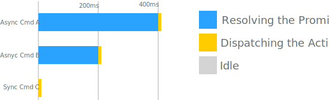
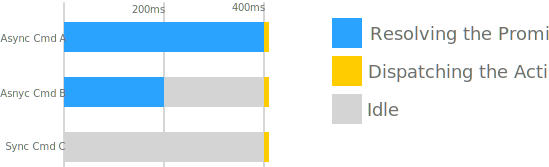

Cmds
The Cmd module provides access to all of the functions you'll need to
create and represent different kinds of cmd objects to redux-loop's
cmd-processor. Every cmd object is simply a plain JavaScript object that
describes to the store how to process it. Cmd objects are never executed in
the reducer, leaving your reducer pure and testable.
Cmd object-generators
A Cmd object (generated by Cmd.map(), Cmd.run(), Cmd.action(), etc.)
has the following minimum parameters and shape:
[Symbol.for('isCmd')]: true,
type: String,
simulate: Function
Cmd.none
none is a no-op effect that you can use for convenience when building custom
effect creators from the ones provided. Since it does not resolve to an action
it doesn't cause any side effects to actually occur.
Simulation
Simulating Cmd.none always returns null.
expect(Cmd.none.simulate()).toBe(null); //parameter is ignored
Examples
// The following two expressions are equivalent when processed by the store.
return loop(
{ ...state, someProp: action.payload },
Cmd.none
);
// ...
return { ...state, someProp: action.payload }
Cmd.action(actionToDispatch)
action() allows you to schedule a plain action object for dispatch after the
current dispatch is complete. It can be useful for initiating multiple sequences
that run in parallel but don't need to communicate or complete at the same time.
Make sure your action creator is pure if creating an action from a reducer.
actionToDispatch: Action– a plain object with atypeproperty that the store can dispatch.
Simulation
Simulating action always returns actionToDispatch.
const action = {type: 'type', foo: 123};
const cmd = Cmd.action(action);
expect(cmd.simulate()).toEqual(action); //parameter is ignored
Examples
// Once the store has finished updating this part of the state with the new
// result where `someProp` is set to `action.payload` it will schedule another
// dispatch for the action SOME_ACTION.
return loop(
{ ...state, someProp: action.payload },
Cmd.action({ type: 'SOME_ACTION' })
);
Cmd.setTimeout(cmd, delayMs, options)
setTimeout() allows you to delay the execution of a command to sometime the future. The given command can be of any kind, including a command created by setTimeout() itself.
It uses JavaScript's global setTimeout() internally.
cmd: Cmd– the command to execute.delayMs: number– the number of milliseconds to wait before executing the command.options.scheduledActionCreator: (timerId: number) => Action– an optional function that takestimerIdand creates an action to be dispatched. ThetimerIdcan be passed toCmd.clearTimeout()to cancel the delayed execution.
Simulation
Two parameters are passed to the simulate() method:
timerId: number– the value to be passed tooptions.scheduledActionCreator.nestedSimulation– the simulation value for the nested command. The type depends on which kind of command is nested inside.
Examples
// Once the store has finished updating this part of the state with the new
// result where `showAnimation` is `true` it will use `setTimeout()` to
// schedule another dispatch in 3000ms for the action HIDE_ANIMATION.
return loop(
{ ...state, showAnimation: true },
Cmd.setTimeout(Cmd.action({ type: 'HIDE_ANIMATION' }), 3000)
);
Cmd.setInterval(cmd, delayMs, options)
setInterval() allows you to repeatedly execute a command with a fixed delay between each execution. It uses JavaScript's global setInterval() internally.
For details, see setTimeout() above.
Cmd.clearTimeout(timerId)
Cancel's a delayed command execution created by Cmd.setTimeout().
Equivalent to Cmd.run(clearTimeout, { args: [timerId] }).
Cmd.clearInterval(timerId)
Cancel's a repeated command execution created by Cmd.setInterval().
Equivalent to Cmd.run(clearInterval, { args: [timerId] }).
Cmd.run(func, options)
run() allows you to declaratively schedule a function to be called with some
arguments and dispatch actions based on the results. This
allows you to represent almost any kind of runnable process to the store without
sacrificing functional purity or having to encapsulate implicit state outside
of your reducer. Keep in mind, functions that are handed off to the store with run()
are never invoked in the reducer, only by the store during your application's
runtime. You can invoke a reducer that returns a run() effect as many times
as you want and always get the same result by deep-equality without triggering
any side-effect function calls in the process.
By default, if func returns a promise, that promise's resolution and rejection values are used in the success and fail action creators (if provided). If func does not return a promise, the return value is used for the success action creator, and the fail action creator is only used if an error is thrown.
If a run Cmd is used in a list with batch set to true and func returns a
promise, the list will not finish until the returned promise
resolves/rejects. If a promise is not returned, the batched list does not
wait. You can prevent waiting for a single long-running asynchronous cmd
object by using the forceSync option on that individual cmd object. If you
do, you won't be able to use the action creator options to handle the result
of the cmd object.
func: (...Array<any>) => any– a function to runoptions.successActionCreator: (any) => Action– an optional function that takes the promise resolution value (if func returns a promise) or the return value (if func does not return a promise) and returns an action which will be dispatched.options.failActionCreator: (any) => Action– an optional function that takes the promise rejection value (if func returns a promise) or the thrown error (if func throws) and returns an action which will be dispatched. This should not be omitted if the function is expected to potentially throw an exception. Exceptions are re-thrown if there is no fail handler.options.args: Array<any>– an optional array of arguments to callfuncwith.options.forceSync: boolean– if true, this cmd object will finish synchronously even if func returns a promise. Useful if the cmd object runs as part of a list withbatchset totruebut you don't care about the result of this cmd object and want the list to finish faster.options.testInvariants: boolean– Normally, if your action creators are not functions orargsis not an array, an error will be thrown (unless you are in production). You can turn this off in testing environments by using this option. NOTE: ONLY DO THIS IN TESTS. IF YOU DO THIS IN PRODUCTION, IT WILL THROW. This is useful if you want to do something like:
expect(cmd).toEqual(Cmd.run(foo, {
testInvariants: true,
successActionCreator: jasmine.any(Function) //replace with your testing library's equivalent matcher
}));
because jasmine.any(Function) is not a function.
Simulation
run() cmd simulations pass the result through the correct action creator (depending on the success property passed) and return the resulting action.
If there is no corresponding action creator on the cmd object, null is returned.
const cmd = Cmd.run(sideEffect, {
successActionCreator: result => actionCreator(result, 'hard coded');
});
expect(cmd.simulate({success: true, result: 123})).toEqual(actionCreator(123, 'hard coded'));
expect(cmd.simulate({success: false, result: 123})).toBe(null);
Examples
import { loop, Cmd } from 'redux-loop';
function fetchUser(userId) {
return fetch(`/api/users/${userId}`);
}
function userFetchSuccessfulAction(user) {
return {
type: 'USER_FETCH_SUCCESSFUL',
user
};
}
function userFetchFailedAction(err) {
return {
type: 'USER_FETCH_ERROR',
err
};
}
function reducer(state , action) {
switch(action.type) {
case 'INIT':
return loop(
{...state, initStarted: true},
Cmd.run(fetchUser, {
successActionCreator: userFetchSuccessfulAction,
failActionCreator: userFetchFailedAction,
args: ['123']
})
);
case 'USER_FETCH_SUCCESSFUL':
return {...state, user: action.user};
case 'USER_FETCH_FAILED':
return {...state, error: action.error};
default:
return state;
}
}
Cmd.list(cmds, options)
list() allows you to group cmd objects as a single cmd to be run all together. Use the options to choose when you want the individual cmd objects to run and when the resulting actions are dispatched. The default behavior is to run each cmd object simultaneously and dispatch the results as soon as possible.
cmds: Array<Cmd>– an array of cmd objects returned by any of the other cmd functions, or even nested calls toCmd.list.options.sequence: boolean– By default, asynchronous cmd objects all run immediately and in parallel. Ifsequenceistrue, each cmd object will wait for the previous cmd object to resolve before starting. Note: this does not have an effect if all cmd objects are synchronous.options.batch: boolean– By default, actions from nested cmd objects will be dispatched as soon as that cmd object finishes. Ifbatchistrue, no actions will be dispatched until all of the cmd objects are resolved/finished. The actions will then be dispatched all at once in the order of the original cmd array.options.testInvariants: boolean– Normally, if the first parameter toCmd.list()is not an array of cmd objects, an error will be thrown (unless you are in production). You can turn this off in testing environments by using this option. NOTE: ONLY DO THIS IN TESTS. IF YOU DO THIS IN PRODUCTION, IT WILL THROW. This is useful if you want to pass a custom object from your test library to verify a subset of cmd objects, such asjasmine.arrayContaining(someCmd).
Simulation
Simulating list() simulates all of its child cmd objects and returns an array of the results. The resulting array has nulls filtered out and is flattened.
To simulate list(), pass an array of parameters to be passed to the corresponding cmd objects for simulation.
const cmd1 = Cmd.run(sideEffect, {
successActionCreator: result => actionCreator(result, 'hard coded')
});
const cmd2 = Cmd.run(sideEffect, {
failActionCreator: result => actionCreator2(result, 'foo')
});
const list = Cmd.list([cmd1, cmd2]);
const result = list.simulate([{success: true, result: 123}, {success: false, result: 456}]);
expect(result).toEqual([actionCreator(123, 'hard coded'), actionCreator2(456, 'foo')]);
Examples
import { loop, Cmd } from 'redux-loop';
function reducer(state , action) {
switch(action.type) {
case 'INIT':
return loop(
{...state, initStarted: true},
Cmd.list([
Cmd.run(fetchUser, {
successActionCreator: userFetchSuccessfulAction
failActionCreator: userFetchFailedAction,
args: ['123']
}),
Cmd.run(fetchItem, {
successActionCreator: itemFetchSuccessfulAction,
failActionCreator: itemFetchFailedAction,
args: ['456']
})
])
);
case 'USER_FETCH_SUCCESSFUL':
return {...state, user: action.user};
case 'USER_FETCH_FAILED':
return {...state, userError: action.error};
case 'ITEM_FETCH_SUCCESSFUL':
return {...state, item: action.item};
case 'ITEM_FETCH_FAILED':
return {...state, itemError: action.error};
default:
return state;
}
}
batch option
If you find the difference between batch options confusing, the picture below may help.
{batch: false} (default) - dispatches the action as soon as the individual cmd Promise is resolved (or immediately for synchronous operations)

{batch: true} - waits for all the individual Promises in the list to be resolved, before dispatching any action

Cmd.map(cmd, higherOrderActionCreator, [...additionalArgs])
map() allows you to take an existing cmd object from a nested reducer in your
state and lift it to a more general action in which the resulting action is
nested. This enables you to build your reducer in a fractal-like fashion, in
which all of the logic for a particular slice of your state is totally
encapsulated and actions can be simply directed to the reducer for that slice.
cmd: Cmd– a cmd, the resulting action of which will be passed tohigherOrderActionCreatorto be nested into a higher-order action.higherOrderActionCreator– an action creator function which will accept an action, or optionally some other arguments followed by an action, and return a new action in which the previous action was nested.additionalArgs– a list of additional arguments to pass tohigherOrderActionCreatorbefore passing in the action from the cmd object.
Simulation
Simulating a map cmd simulates the nested cmd and passes the result through tagger. If the result is an array of actions, all of them are passed through tagger. If args are provided to the cmd, they are passed to tagger.
const cmd1 = Cmd.run(sideEffect, {
successActionCreator: result => actionCreator(result, 'hard coded')
});
const map = Cmd.map(cmd1, actionCreator2, 'extra arg');
const result = map.simulate({success: true, result: 123});
expect(result).toEqual(actionCreator2('extra arg', actionCreator(123, 'hard coded')));
Examples
nestedState.js
function incrementAsync(amount) {
return new Promise((resolve) => {
setTimeout(() => (
resolve(amount)
), 100);
});
}
function incrementStart(amount) {
return { type: 'INCREMENT_START', payload: amount };
}
function nestedReducer(state = 0, action) {
switch (action.type) {
case 'INCREMENT_START':
return loop(
state,
Cmd.run(incrementAsync, {
successActionCreator: incrementSuccessAction,
failActionCreator: incremenetFailedAction,
args: [action.payload]
})
);
case 'INCREMENT':
return loop(
state + action.payload,
Cmd.none
);
default:
return loop(
state,
Cmd.none
);
}
}
topState.js
import nestedReducer from './nestedState';
function nestedAction(action) {
return { type: 'NESTED_ACTION', payload: action };
}
function reducer(state = { /* ... */ }, action) {
switch(action.type) {
// ... other top-level things
case 'NESTED_ACTION':
const [model, cmd] = nestedReducer(state.nestedCount, action.payload);
return loop(
{ ...state, nestedCount: model },
Cmd.map(cmd, nestedAction)
);
default:
return state;
}
}
Cmd helper symbols
Cmd.getState
A symbol that can be passed to a cmd object as an arg (from a reducer) that will be replaced at the time the function is called with the getState() method from the store.
Example
import {loop, Cmd} from 'redux-loop';
import {doSomething} from 'something.js';
import {doSomethingResultAction} from './actions.js';
function reducer(state, action) {
switch(action.type) {
case 'ACTION':
return loop(
{...state, initStarted: true},
Cmd.run(doSomething, {
successActionCreator: doSomethingResultAction,
args: [Cmd.getState]
})
);
default:
return state;
}
}
//something.js
export function doSomething(getState) {
let value = getState().some.random.value;
console.log(value);
}
Cmd.dispatch
A symbol that can be passed to a cmd object as an arg (from a reducer) that will be replaced at the time the function is called with the dispatch method from the store.
Example
import {loop, Cmd} from 'redux-loop';
import {doSomething} from 'something.js';
import {doSomethingResultAction} from './actions.js';
function reducer(state, action) {
switch(action.type) {
case 'ACTION':
return loop(
{...state, initStarted: true},
Cmd.run(doSomething, {
successActionCreator: doSomethingResultAction,
args: [Cmd.dispatch]
})
);
default:
return state;
}
}
//something.js
export function doSomething(dispatch) {
let value = someThing();
if(value === 123) {
dispatch(valueIs123Action());
}
return value;
}